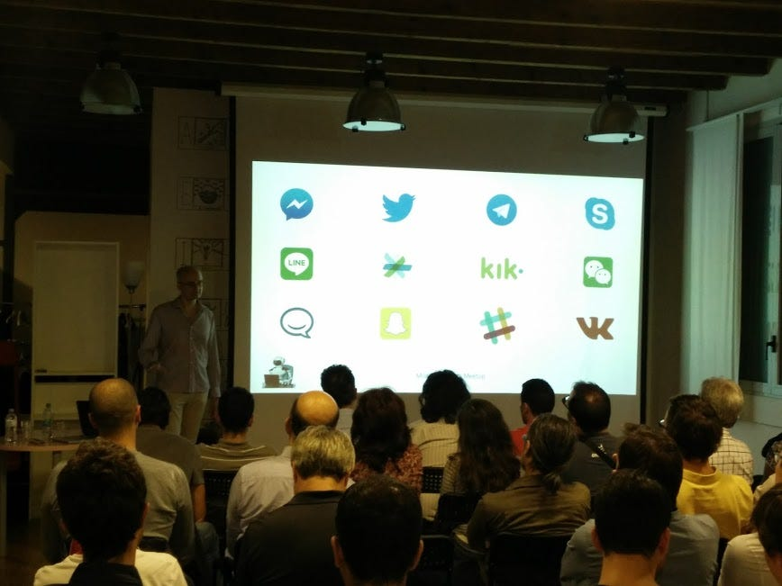

Chatbots Milano, buona la prima

Il primo meetup del gruppo milanese dei Chatbot è stato un successo. Il 29 settembre al Venini42 eravamo in 45, nonostante lo sciopero dei treni ci abbia privato di un po’ di partecipanti. Gli interventi sono piaciuti e dopo un’ora e mezza di talk abbiamo fatto un paio d’ore di chiacchiere, birre, focacce e patatine. Gli ultimi tiratardi hanno spento le luci alle 23.
Quel che mi ha dato molta soddisfazione come organizzatore è stata soprattutto la fase di networking dopo i talk. Testimonia che l’argomento tira e che le persone hanno davvero voglia di creare qualcosa. Ho girato per un po’ tutte le conversazioni ma ovviamente ho perso più della metà di quel che è successo. Eppure ho visto nascere molti contatti. C’erano aziende che volevano presentare i loro prodotti e le loro esperienze, sviluppatori che volevano imparare o spiegare quel che hanno fatto, designer, responsabili di progetto, innovation manager, ecc.
Dopo il mio keynote hanno presentato due sviluppatori. Guido Bellomo ha mostrato come creare bot cross platform usando il suo tool RedBot.
e Salvatore Cordiano ha mostrato come scriverne uno in PHP per Telegram, con walkthrough e demo interattiva apprezzata dal pubblico che mandava messaggi al bot. Le sue slide ed il suo codice sono qui.
Ha chiuso la serie dei talk una presentazione molto apprezzata di Alessandro Vitale che ha mostrato le sue esperienze nell’uso del linguaggio naturale per comunicare con i bot e i vantaggi rispetto a interfacce più tradizionali.
Data la dimensione del gruppo (180 iscritti al 29/9 e 236 oggi) ci sono arrivati sconti per conferenze ed offerte di lavoro, che abbiamo trasmesso in mailing list. Tra le offerte ricordo quella di The Oak, che era presente in sala e ha spiegato chi sta cercando e perché. Ci è arrivato anche l’invito a partecipare al Codemotion di fine novembre a Milano con uno spazio tutto per noi il venerdì sera. Lo spazio per i talk del Codemotion è andato via in un attimo ed attendo la pubblicazione ufficiale del programma per presentarveli.
Il prossimo meetup sarà giovedì 20 ottobre sempre alle 19 al Venini42. Il programma dei talk è già definito. Inizio io con una rapida visione di una Chat of Things e a seguire presenteranno le loro esperienze e i loro prodotti Vittorio Banfi di botsociety.io e Federico Nitidi, che ha sviluppato il bot di calciomercato.com. Interverrano anche Codemotion, che ci regalerà un biglietto omaggio e delle magliette (estratti tra i presenti) ed offrirà il buffet, e da remoto Thomas Schulz di botscamp.io
C’è così interesse che in pratica è già fatto anche il programma del meetup del 17 novembre, ma lo annuncerò durante il meetup di ottobre. Per ora vi dico che si tratta di altre aziende italiane che presentano i loro prodotti e le loro esperienze.
Intanto iscrivetevi al meetup di ottobre!